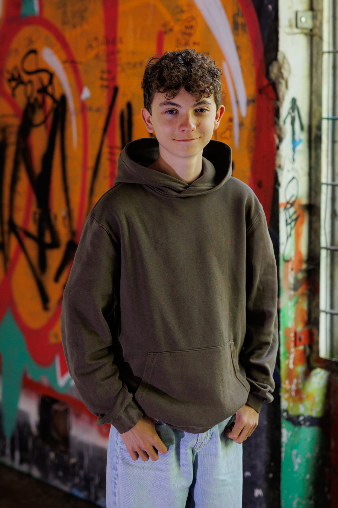

Fabian Ziems
Singer/Actor
[ueber-mich-text]
Performances
Songs
Career History
Photo: Foto: Zum Glück zurück - all in production / ZDF
In 2020, Fabian played his first role as Lenny Sandmeier in the ZDF film "Zum Glück zurück". This was followed by other films and series on ZDF and ARD.
Photo:
In the musical “Ludwig” performed at the Festspielhaus Neuschwanstein, Fabian played the role of Crown Prince Ludwig from 2019 to 2020.
Photo: Foto: schall-foto.de
Fabian trat erstmals als Sänger im Fernsehen auf, als er im Jahr 2025 an der 13. Staffel der deutschen Gesangs-Castingshow The Voice Kids teilnahm.
Photo: The Voice Kids - Joyn / Claudius Pflug
On December 19, 2025, Fabian's debut single, “Alles Anders,” was released on all major streaming platforms.
Photo:
Am 19.12.2025 erschien Fabians erste Debut-Single „Alles Anders“ auf allen gängigen Streaming-Plattformen.
For autograph requests:
Please send an envelope with a self-addressed, stamped return envelope and your autograph requests to the following address:
Fabian Ziems
undefined undefined
undefined undefined
Press Articles


Photo: Keine Ahnung


Photo: Seine Webseite